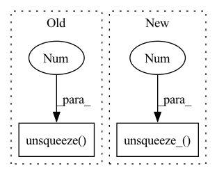

Pattern ID :30682
Before Change
hr_ycbcr = imgproc.convert_rgb_to_ycbcr(hr_image)
hr_y_image = hr_ycbcr[..., 0]
hr_y_image /= 255.
hr_y_tensor = torch.from_numpy(hr_y_image).to(config.device).unsqueeze(0).unsqueeze(0 )
hr_y_tensor = hr_y_tensor.half()
// Only reconstruct the Y channel image data.
with torch.no_grad():After Change
// Extract Y channel lr image data
lr_image = np.array(lr_image).astype(np.float32)
lr_ycbcr_image = imgproc.convert_rgb_to_ycbcr(lr_image)
lr_y_tensor = imgproc.image2tensor(lr_ycbcr_image, range_norm=False, half=False).unsqueeze_(0 )
// Extract Y channel hr image data.
hr_image = np.array(hr_image).astype(np.float32)
hr_ycbcr_image = imgproc.convert_rgb_to_ycbcr(hr_image)In pattern: SUPERPATTERN
Frequency: 3
Non-data size: 2
Instances Fragment ID: 90495236
Project Name: lornatang/srcnn-pytorch
Commit Name: b6ddb986e995a802e1a2a21d35c5045b641be0bd
Time: 2021-11-24
Author: liuchangyu1111@gmail.com
File Name: validate.py
M Class Name: AnonimousClass
N Class Name: AnonimousClass
M Method Name: main(0)
N Method Name: main(0)
M Parent Class:
N Parent Class:
M File Name: validate.py
N File Name: validate.py
M Start Line: 35
M End Line: 94
N Start Line: 73
N End Line: 88
Before Change
lr_ycbcr = imgproc.convert_rgb_to_ycbcr(lr_image)
lr_y_image = lr_ycbcr[..., 0]
lr_y_image /= 255.
lr_y_tensor = torch.from_numpy(lr_y_image).to(config.device).unsqueeze(0).unsqueeze(0 )
lr_y_tensor = lr_y_tensor.half()
// Extract Y channel hr image data.
hr_image = np.array(hr_image).astype(np.float32)After Change
// Extract Y channel hr image data.
hr_image = np.array(hr_image).astype(np.float32)
hr_ycbcr_image = imgproc.convert_rgb_to_ycbcr(hr_image)
hr_y_tensor = imgproc.image2tensor(hr_ycbcr_image, range_norm=False, half=True).unsqueeze_(0 )
// Only reconstruct the Y channel image data.
with torch.no_grad():
sr_y_tensor = model(lr_y_tensor) Fragment ID: 90495237
Project Name: lornatang/vdsr-pytorch
Commit Name: 423bc11c59dd05d804644664c689af9a9d8e60eb
Time: 2021-11-24
Author: liuchangyu1111@gmail.com
File Name: validate.py
M Class Name: AnonimousClass
N Class Name: AnonimousClass
M Method Name: main(0)
N Method Name: main(0)
M Parent Class:
N Parent Class:
M File Name: validate.py
N File Name: validate.py
M Start Line: 73
M End Line: 94
N Start Line: 73
N End Line: 88
Before Change
// sample one action from each actor in each environment
act_dists = [actor(state_rep) for actor in self.actors]
act_candidates = torch.stack(
[dist.sample() for dist in act_dists], dim=0
).unsqueeze(-1 )
// act_candidates.shape = (actors, envs, action_dimension)
act_dist = random.choice(act_dists) // not important; used for logging
if self.discrete:After Change
act_dist = random.choice(act_dists) // not important; used for logging
if self.discrete:
act_candidates.unsqueeze_(-1 )
q_vals = torch.stack(
[critic(state_rep) for critic in self.critics],
dim=0,
) // q_vals.shape = (critics, actors, envs, action_dimension) Fragment ID: 90495243
Project Name: jakegrigsby/super_sac
Commit Name: 2bf67006a69c03834813a617d8149dda9db31f4a
Time: 2021-10-12
Author: jcg6dn@virginia.edu
File Name: uafbc/agent.py
M Class Name: Agent
N Class Name: Agent
M Method Name: sample_action(5)
N Method Name: sample_action(5)
M Parent Class:
N Parent Class:
M File Name: uafbc/agent.py
N File Name: uafbc/agent.py
M Start Line: 193
M End Line: 195
N Start Line: 193
N End Line: 200